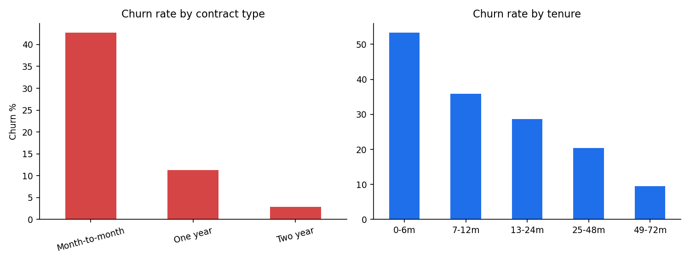
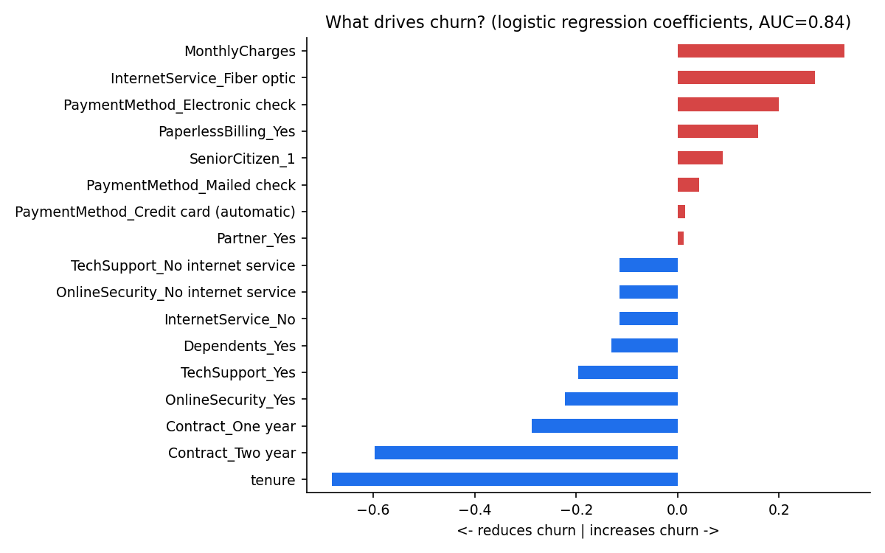

Classification
Customer churn: drivers and revenue at risk
26.6% of customers churn. This project finds which ones and why, and puts a number on how much revenue a targeted retention campaign could protect.
Data: IBM Telco Customer Churn, 7,032 customers.
Python, scikit-learn, pandas, Matplotlib
- AUC on the held-out test set
- 0.837
- annualized revenue with high-risk customers
- $445K
- churners reached by targeting the top 20%
- 2.5x
- churn on month-to-month contracts
- 42.7%
The check
The question
Which customers churn, why, and how much revenue can a targeted retention campaign realistically protect?
What I did
- Cleaned and explored the dataset, measuring churn rates across contract type, tenure, internet service and payment method.
- Built a logistic regression classifier with balanced class weights, chosen for interpretability: every coefficient maps to an action a retention team can take.
- Translated model scores into business terms: $445K of annualized revenue sits with high-risk customers (churn probability of 0.7 or more) in the test set alone.
- Showed the efficiency case for scored outreach over blanket discounts: the model's top 20% by risk reaches churners at 2.5 times the base rate.
What I found
- Month-to-month contracts churn at 42.7% against 2.8% on two-year contracts, so contract migration is the single biggest lever.
- The first 6 months are the danger zone: 53% churn, falling to 9.5% after 4 years, so onboarding investment pays off.
- Fiber-optic customers churn at 41.9% against 19% on DSL despite paying more, a price or service-quality red flag.
- Electronic-check payers churn at 45.3%, about 3 times auto-payment users, so nudging customers to auto-pay is a cheap retention win.


Recommended playbook
- Offer a first-year discount for month-to-month customers with high risk scores who move to a one-year contract.
- Run proactive 90-day onboarding check-ins for new fiber customers.
- Target an auto-pay sign-up incentive at electronic-check payers.
Run it
pip install pandas scikit-learn matplotlib
python churn_analysis.py